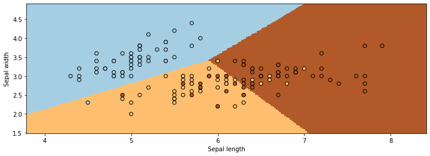
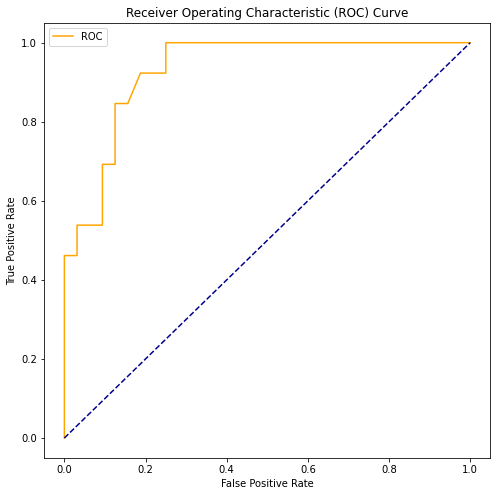
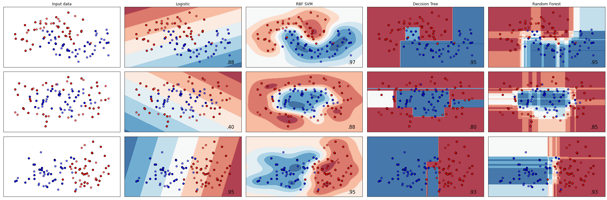

Modelo de regresión logística
Definición
A modo de recuerdo, el modelo de regresión lineal general supone que, \(\boldsymbol{Y} = \boldsymbol{X}\boldsymbol{\beta} + \boldsymbol{\epsilon},\) donde:
- \(\boldsymbol{X} = (x_1,...,x_n)^{T}\): variable explicativa
- \(\boldsymbol{Y} = (y_1,...,y_n)^{T}\): variable respuesta
- \(\boldsymbol{\epsilon} = (\epsilon_1,...,\epsilon_n)^{T}\): error se asume un ruido blanco, es decir, \(\epsilon \sim \mathcal{N}( \boldsymbol{0},\sigma^2I)\)
- \(\boldsymbol{\beta} = (\beta_1,...,\beta_n)^{T}\): coeficientes de regresión.
Por otro lado, el modelo de regresión logística analiza datos distribuidos binomialmente de la forma: \(Y_i \sim B(p_i,n_i)\), para \(i=1,...,m\) donde los números de ensayos Bernoulli \(n_{i}\) son conocidos y las probabilidades de éxito \(p_{i}\) son desconocidas. Un ejemplo de esta distribución es el porcentaje de semillas $p_{i} $ que germinan después de que \(n_{i}\) son plantadas.
El modelo es entonces obtenido a base de lo que cada ensayo (valor de \(i\)) y el conjunto de variables explicativas/independientes puedan informar acerca de la probabilidad final. Estas variables explicativas pueden pensarse como un vector \(X_i\) k-dimensional y el modelo toma entonces la forma:
Los logits de las probabilidades binomiales desconocidas (i.e., los logaritmos de la razón de momios) son modeladas como una función lineal de los \(X_i\):
Note que un elemento particular de \(X_i\) puede ser ajustado a 1 para todo \(i\) obteniéndose una constante independiente en el modelo. Los parámetros desconocidos \(\beta _{j}\) son usualmente estimados a través de máxima verosimilitud.
La interpretación de los estimados del parámetro \(\beta _{j}\) es como los efectos aditivos en el logaritmo de la razón de momios para una unidad de cambio en la jésima variable explicativa. En el caso de una variable explicativa dicotómica, por ejemplo género, \(e^{\beta}\) es la estimación de la razón de momios (odds ratio) de tener el resultado para, por decir algo, hombres comparados con mujeres. El modelo tiene una formulación equivalente dada por:
Interpretación para el caso binario
La idea es que la regresión logística aproxime la probabilidad de obtener 0 (no ocurre cierto suceso) o 1 (ocurre el suceso) con el valor de la variable explicativa \(x\).
En esas condiciones, la probabilidad aproximada del suceso se aproximará mediante una función logística del tipo:
que puede reducirse al cálculo de una regresión lineal para la función logit de la probabilidad:
El gráfico de la función logística se muestra en la figura que encabeza esta sección, la variable independiente es la combinación lineal \(=\beta_0+\beta_1\) y la variable dependiente es la probabilidad estimada $ \pi (x)$. Si se realiza la regresión lineal, la forma de la probabilidad estimada puede ser fácilmente recuperada a partir de los coeficientes calculados.
Para hacer la regresión deben tomarse los valores \(X_i\) de las observaciones ordenados de mayor a menor y formar la siguiente tabla:
| Valores | categoría | Probabilidad | Logit |
|---|---|---|---|
| \(X_1\) | \(\epsilon_1\) | \(\pi(X_1)\) | \(g(X_1)\) |
| \(X_2\) | \(\epsilon_2\) | \(\pi(X_2)\) | \(g(X_2)\) |
| \(X_n\) | \(\epsilon_n\) | \(\pi(X_n)\) | \(g(X_n)\) |
Donde \(ε_i\) es "0" o "1" según el caso y además:

Error de Predicción
Matriz de confusión
Los modelos de clasificacion son ocupadas para predecir valores categóricos, por ejemplo, determinar la especie de una flor basado en el largo (y ancho) de su pétalo (y sépalo).Para este caso, es necesario introducir el concepto de matriz de confusión.
La matriz de confusión es una herramienta que permite la visualización del desempeño de un algoritmo Para la clasificación de dos clases (por ejemplo, 0 y 1), se tiene la siguiente matriz de confusión:

Acá se define:
- TP = Verdadero positivo: el modelo predijo la clase positiva correctamente, para ser una clase positiva.
- FP = Falso positivo: el modelo predijo la clase negativa incorrectamente, para ser una clase positiva.
- FN = Falso negativo: el modelo predijo incorrectamente que la clase positiva sería la clase negativa.
- TN = Verdadero negativo: el modelo predijo la clase negativa correctamente, para ser la clase negativa.
En este contexto, los valores TP Y TN muestran los valores correctos que tuve al momento de realizar la predicción, mientras que los valores de de FN Y FP denotan los valores que me equivoque de clase.
Los conceptos de FN y FP se pueden interpretar con la siguiente imagen:

Métricas de error ( clasificación )
En este contexto, se busca maximizar el número al máximo la suma de los elementos TP Y TN, mientras que se busca disminuir la suma de los elementos de FN y FP. Para esto se definen las siguientes métricas:
- Accuracy
- Recall:
- Precision:
- F-score:
Curva AUC–ROC
La curva AUC–ROC es una representación gráfica de la sensibilidad frente a la especificidad para un sistema clasificador binario según se varía el umbral de discriminación. Otra interpretación de este gráfico es la representación de la razón o proporción de verdaderos positivos (VPR = Razón de Verdaderos Positivos) frente a la razón o proporción de falsos positivos (FPR = Razón de Falsos Positivos) también según se varía el umbral de discriminación (valor a partir del cual decidimos que un caso es un positivo). ROC también puede significar Relative Operating Characteristic (Característica Operativa Relativa) porque es una comparación de dos características operativas (VPR y FPR) según cambiamos el umbral para la decisión.
En español es preferible mantener el acrónimo inglés, aunque es posible encontrar el equivalente español COR. No se suele utilizar ROC aislado, debemos decir “curva ROC” o “análisis ROC”.

El área cubierta por la curva es el área entre la línea naranja (ROC) y el eje. Esta área cubierta es AUC. Cuanto más grande sea el área cubierta, mejores serán los modelos de aprendizaje automático para distinguir las clases dadas. El valor ideal para AUC es 1.
Ejemplo: Dataset Iris (regresión logística)
Veamos un pequeño ejemplo de como se implementa en python. En este ejemplo voy a utilizar el dataset Iris que ya viene junto con Scikit-learn y es ideal para practicar con regresiones logística ; el mismo contiene los tipos de flores basado en en largo y ancho de su sépalo y pétalo.
# librerias
import os
import numpy as np
import pandas as pd
from sklearn import datasets
from sklearn.model_selection import train_test_split
import matplotlib.pyplot as plt
import seaborn as sns
pd.set_option('display.max_columns', 500) # Ver más columnas de los dataframes
# Ver gráficos de matplotlib en jupyter notebook/lab
%matplotlib inline
.. _iris_dataset:
Iris plants dataset
--------------------
**Data Set Characteristics:**
:Number of Instances: 150 (50 in each of three classes)
:Number of Attributes: 4 numeric, predictive attributes and the class
:Attribute Information:
- sepal length in cm
- sepal width in cm
- petal length in cm
- petal width in cm
- class:
- Iris-Setosa
- Iris-Versicolour
- Iris-Virginica
:Summary Statistics:
============== ==== ==== ======= ===== ====================
Min Max Mean SD Class Correlation
============== ==== ==== ======= ===== ====================
sepal length: 4.3 7.9 5.84 0.83 0.7826
sepal width: 2.0 4.4 3.05 0.43 -0.4194
petal length: 1.0 6.9 3.76 1.76 0.9490 (high!)
petal width: 0.1 2.5 1.20 0.76 0.9565 (high!)
============== ==== ==== ======= ===== ====================
:Missing Attribute Values: None
:Class Distribution: 33.3% for each of 3 classes.
:Creator: R.A. Fisher
:Donor: Michael Marshall (MARSHALL%PLU@io.arc.nasa.gov)
:Date: July, 1988
The famous Iris database, first used by Sir R.A. Fisher. The dataset is taken
from Fisher's paper. Note that it's the same as in R, but not as in the UCI
Machine Learning Repository, which has two wrong data points.
This is perhaps the best known database to be found in the
pattern recognition literature. Fisher's paper is a classic in the field and
is referenced frequently to this day. (See Duda & Hart, for example.) The
data set contains 3 classes of 50 instances each, where each class refers to a
type of iris plant. One class is linearly separable from the other 2; the
latter are NOT linearly separable from each other.
.. topic:: References
- Fisher, R.A. "The use of multiple measurements in taxonomic problems"
Annual Eugenics, 7, Part II, 179-188 (1936); also in "Contributions to
Mathematical Statistics" (John Wiley, NY, 1950).
- Duda, R.O., & Hart, P.E. (1973) Pattern Classification and Scene Analysis.
(Q327.D83) John Wiley & Sons. ISBN 0-471-22361-1. See page 218.
- Dasarathy, B.V. (1980) "Nosing Around the Neighborhood: A New System
Structure and Classification Rule for Recognition in Partially Exposed
Environments". IEEE Transactions on Pattern Analysis and Machine
Intelligence, Vol. PAMI-2, No. 1, 67-71.
- Gates, G.W. (1972) "The Reduced Nearest Neighbor Rule". IEEE Transactions
on Information Theory, May 1972, 431-433.
- See also: 1988 MLC Proceedings, 54-64. Cheeseman et al"s AUTOCLASS II
conceptual clustering system finds 3 classes in the data.
- Many, many more ...
# dejar en formato dataframe
iris_df = pd.DataFrame(iris.data, columns=iris.feature_names)
iris_df['TARGET'] = iris.target
iris_df.head() # estructura de nuestro dataset.
| sepal length (cm) | sepal width (cm) | petal length (cm) | petal width (cm) | TARGET | |
|---|---|---|---|---|---|
| 0 | 5.1 | 3.5 | 1.4 | 0.2 | 0 |
| 1 | 4.9 | 3.0 | 1.4 | 0.2 | 0 |
| 2 | 4.7 | 3.2 | 1.3 | 0.2 | 0 |
| 3 | 4.6 | 3.1 | 1.5 | 0.2 | 0 |
| 4 | 5.0 | 3.6 | 1.4 | 0.2 | 0 |
Para ver gráficamente el modelo de regresión logística, ajustemos el modelo solo a dos variables: petal length (cm), petal width (cm).
# datos
from sklearn.linear_model import LogisticRegression
X = iris_df[['sepal length (cm)', 'sepal width (cm)']]
Y = iris_df['TARGET']
# split dataset
X_train, X_test, Y_train, Y_test = train_test_split(X, Y, test_size=0.2, random_state = 2)
# print rows train and test sets
print('Separando informacion:\n')
print('numero de filas data original : ',len(X))
print('numero de filas train set : ',len(X_train))
print('numero de filas test set : ',len(X_test))
Separando informacion:
numero de filas data original : 150
numero de filas train set : 120
numero de filas test set : 30
LogisticRegression()
0.825
array([[ -3.99669749, -0.66190745, -0.76409046],
[ -0.21107893, -1.90464333, -3.18413364],
[ -1.8065849 , -0.52153993, -1.41807287],
[ -6.47991623, -3.03584962, -0.05083842],
[ -1.05110824, -0.71678289, -1.81936211],
[ -0.17004605, -2.74876413, -2.3819842 ],
[ -4.68728813, -0.80298536, -0.61101654],
[ -2.96770066, -0.71008075, -0.78312858],
[ -3.63294174, -0.2154118 , -1.78765395],
[ -5.51537947, -1.46091555, -0.26925051],
[ -2.98670271, -0.60263228, -0.91086157],
[ -3.64615407, -0.71257092, -0.72664838],
[ -4.79873937, -1.4202387 , -0.28754402],
[ -2.24998139, -0.20623326, -2.51385499],
[ -0.06253829, -2.98157867, -4.61419118],
[ -4.37794957, -0.51550211, -0.94097214],
[ -0.19806777, -2.0180827 , -3.06239155],
[ -4.75300091, -1.24804972, -0.35053651],
[ -0.10414361, -2.60012179, -3.703401 ],
[ -0.1399092 , -2.36113102, -3.31733432],
[ -0.33299812, -1.72995085, -2.24492641],
[ -1.36052475, -0.39394677, -2.67243331],
[ -2.00164029, -1.07409158, -0.64764129],
[ -7.3103791 , -3.31679977, -0.03763674],
[ -0.34589815, -1.61640035, -2.36655737],
[ -4.75300091, -1.24804972, -0.35053651],
[ -2.32561455, -1.12330948, -0.54978327],
[ -8.62419813, -2.24523278, -0.11214189],
[ -5.53049122, -0.33797257, -1.26294071],
[ -0.06998861, -2.75798325, -5.47839753],
[ -0.18803569, -1.9034554 , -3.80038456],
[ -3.06265058, -0.4256791 , -1.20427132],
[ -2.4142983 , -0.45329007, -1.29085265],
[ -1.43446384, -0.44603054, -2.10707824],
[ -9.03137722, -2.37765551, -0.09748871],
[ -4.69174057, -0.68098728, -0.72419992],
[ -3.66230617, -0.60227249, -0.85153142],
[ -0.05027585, -3.34866781, -4.27573592],
[ -2.4142983 , -0.45329007, -1.29085265],
[ -0.06340959, -3.33994623, -3.6495755 ],
[ -2.71090648, -0.4751419 , -1.16562856],
[ -3.422256 , -0.38407763, -1.2507754 ],
[ -1.82139702, -0.30530631, -2.28964102],
[ -0.23342127, -2.28448194, -2.24098902],
[ -3.25980162, -0.24347857, -1.72761517],
[ -2.33611822, -0.62801104, -0.99521069],
[ -4.75300091, -1.24804972, -0.35053651],
[ -9.67524275, -2.21910725, -0.11515155],
[ -0.34353786, -1.38299432, -3.22095311],
[ -2.6423909 , -1.03887894, -0.55345829],
[ -0.03480928, -3.73440813, -4.57337069],
[ -3.06265058, -0.4256791 , -1.20427132],
[ -5.18402425, -1.53076722, -0.25099663],
[ -0.24523474, -1.68589809, -3.43575133],
[ -3.35645967, -0.10909088, -2.68102926],
[ -0.24523474, -1.68589809, -3.43575133],
[ -0.07746962, -2.84820416, -4.09855929],
[ -0.12756408, -2.60168695, -3.08752732],
[ -5.46678423, -1.28586978, -0.32938621],
[ -2.6423909 , -1.03887894, -0.55345829],
[ -0.11158762, -2.48111528, -3.81957595],
[ -0.01601167, -4.64447482, -5.07204482],
[ -5.40710339, -0.59393632, -0.81336006],
[-10.32214698, -2.06359771, -0.13585311],
[ -5.53049122, -0.33797257, -1.26294071],
[ -5.07086967, -2.1981711 , -0.12475057],
[ -1.66675571, -0.29897084, -2.66556294],
[ -3.66230617, -0.60227249, -0.85153142],
[ -4.35319491, -0.99654955, -0.48129372],
[ -0.10414361, -2.60012179, -3.703401 ],
[ -8.46843914, -1.83657274, -0.17384478],
[ -2.33611822, -0.62801104, -0.99521069],
[ -5.03844127, -0.75293161, -0.64906835],
[ -0.13370583, -2.14573723, -4.80718114],
[ -2.13015961, -0.44390775, -1.42854624],
[ -0.14884726, -2.24361855, -3.43500331],
[ -0.15976538, -2.12808615, -3.55465238],
[ -3.1182411 , -0.3548191 , -1.36859278],
[ -5.51537947, -1.46091555, -0.26925051],
[ -2.5357413 , -0.32183203, -1.62975754],
[ -4.33853357, -0.72898717, -0.68409426],
[ -5.57382666, -1.64581327, -0.21896676],
[ -6.14300989, -1.15968166, -0.37940919],
[ -3.67733948, -1.1231079 , -0.43164097],
[ -5.51537947, -1.46091555, -0.26925051],
[ -3.25980162, -0.24347857, -1.72761517],
[ -1.50374348, -0.6199054 , -1.42833279],
[ -2.64559993, -0.66273639, -0.88286013],
[ -3.69170941, -0.5052252 , -0.98966559],
[ -3.06265058, -0.4256791 , -1.20427132],
[ -1.70787592, -0.80218252, -0.99317107],
[ -0.03480928, -3.73440813, -4.57337069],
[ -6.17079981, -0.42876844, -1.05958475],
[ -1.50374348, -0.6199054 , -1.42833279],
[ -3.18432235, -0.29444982, -1.54340497],
[ -3.06265058, -0.4256791 , -1.20427132],
[ -3.65400219, -0.97332008, -0.51703462],
[ -5.05989815, -1.02728954, -0.45306334],
[ -0.03094358, -4.23634452, -4.13458123],
[ -0.09199006, -2.50522834, -5.0785667 ],
[ -3.98888929, -0.78054977, -0.64755132],
[ -3.31830082, -1.0388256 , -0.49443459],
[ -7.74336497, -1.78746182, -0.18370422],
[ -0.05357357, -3.225515 , -4.38776458],
[ -6.62509295, -1.61990942, -0.2221981 ],
[ -0.03965368, -3.48635147, -4.79567696],
[ -4.35319491, -0.99654955, -0.48129372],
[ -4.08715355, -1.38461613, -0.31089182],
[ -0.34589815, -1.61640035, -2.36655737],
[ -3.31177254, -0.65294575, -0.81409912],
[ -0.07511489, -2.74125422, -4.84422965],
[ -5.0899367 , -1.18377862, -0.37437096],
[ -1.76295435, -0.6043599 , -1.26571138],
[ -0.11158762, -2.48111528, -3.81957595],
[ -4.35319491, -0.99654955, -0.48129372],
[ -4.71854451, -1.08714279, -0.42481105],
[ -0.07746962, -2.84820416, -4.09855929],
[ -0.01626132, -4.2872282 , -6.03778143],
[ -5.40710339, -0.59393632, -0.81336006],
[ -0.03160108, -4.48990308, -3.91777686]])
Grafiquemos nuestro resultados:
# grafica de la regresion logistica
plt.figure(figsize=(12,4))
x_min, x_max = X[:, 0].min() - .5, X[:, 0].max() + .5
y_min, y_max = X[:, 1].min() - .5, X[:, 1].max() + .5
h = .02 # step size in the mesh
xx, yy = np.meshgrid(np.arange(x_min, x_max, h), np.arange(y_min, y_max, h))
Z = rlog.predict(np.c_[xx.ravel(), yy.ravel()])
# Put the result into a color plot
Z = Z.reshape(xx.shape)
plt.figure(1, figsize=(4, 3))
plt.pcolormesh(xx, yy, Z, cmap=plt.cm.Paired, shading='auto')
# Plot also the training points
plt.scatter(X[:, 0], X[:, 1], c=Y, edgecolors='k', cmap=plt.cm.Paired)
plt.xlabel('Sepal length')
plt.ylabel('Sepal width')
plt.show()

Gráficamente podemos decir que el modelo se ajusta bastante bien, puesto que las clasificaciones son adecuadas y el modelo no se confunde entre una clase y otra. Por otro lado, existe valores numéricos que también nos pueden ayudar a convensernos de estos, que son las métricas que se habian definidos con anterioridad.
Para ello, instanciaremos las distintas metricas del archivo metrics_classification.py y calcularemos sus distintos valores.
# metrics
from metrics_classification import *
from sklearn.metrics import confusion_matrix
y_true = list(Y_test)
y_pred = list(rlog.predict(X_test))
print('Valores:\n')
print('originales: ', y_true)
print('predicho: ', y_pred)
Valores:
originales: [0, 0, 2, 0, 0, 2, 0, 2, 2, 0, 0, 0, 0, 0, 1, 1, 0, 1, 2, 1, 1, 1, 2, 1, 1, 0, 0, 2, 0, 2]
predicho: [0, 0, 1, 0, 0, 2, 0, 2, 2, 0, 0, 0, 0, 0, 2, 2, 1, 1, 2, 1, 2, 2, 2, 1, 1, 0, 0, 1, 0, 2]
Matriz de confusion:
[[13 1 0]
[ 0 4 4]
[ 0 2 6]]
# ejemplo
df_temp = pd.DataFrame(
{
'y':y_true,
'yhat':y_pred
}
)
df_metrics = summary_metrics(df_temp)
print("\nMetricas para los regresores : 'sepal length (cm)' y 'sepal width (cm)'")
print("")
df_metrics
Metricas para los regresores : 'sepal length (cm)' y 'sepal width (cm)'
| accuracy | recall | precision | fscore | |
|---|---|---|---|---|
| 0 | 0.7667 | 0.7262 | 0.7238 | 0.721 |
Basado en las métricas y en la gráfica, podemos concluir que el ajuste realizado es bastante asertado.
Ahora, calculamos la curva AUC-ROC para nuestro ejemplo. Cabe destacar que esta curva es efectiva solo para clasificación binaria, por lo que para efectos prácticos convertiremos nuestro TARGET en binarios (0 ó 1).
Para efectos prácticos tranformaremos la clase objetivo (en este caso, la clase 0) a 1, y el resto de las clases (clase 1 y 2) las dejaremos en la clase 0.
# graficar curva roc
def plot_roc_curve(fpr, tpr):
plt.figure(figsize=(8,8))
plt.plot(fpr, tpr, color='orange', label='ROC')
plt.plot([0, 1], [0, 1], color='darkblue', linestyle='--')
plt.xlabel('False Positive Rate')
plt.ylabel('True Positive Rate')
plt.title('Receiver Operating Characteristic (ROC) Curve')
plt.legend()
plt.show()
# separar clase 0 del resto
X = iris_df[['sepal length (cm)', 'sepal width (cm)']]
Y = iris_df['TARGET'].apply(lambda x: 1 if x ==2 else 0)
model = LogisticRegression()
# split dataset
X_train, X_test, Y_train, Y_test = train_test_split(X, Y, test_size=0.3, random_state = 2)
# ajustar modelo
model.fit(X_train,Y_train)
LogisticRegression()
# calcular score AUC
probs = model.predict_proba(X_test) # predecir probabilidades para X_test
probs_tp = probs[:, 1] # mantener solo las probabilidades de la clase positiva
auc = roc_auc_score(Y_test, probs_tp) # calcular score AUC
print('AUC: %.2f' % auc)
AUC: 0.93
# calcular curva ROC
fpr, tpr, thresholds = roc_curve(Y_test, probs_tp) # obtener curva ROC
plot_roc_curve(fpr, tpr)

Varios modelos de clasificación
Existen varios modelos de clasificación que podemos ir comparando unos con otros, dentro de los cuales estacamos los siguientes:
Nos basaremos en un ejemplo de sklearn que muestra los resultados de aplicar estos cuatro modelos sobre tres conjunto de datos distintos ( make_moons, make_circles, make_classification). Además, se crea un rutina para comparar los resultados de las distintas métricas.
Gráficos
Similar al gráfico aplicado al conjunto de datos Iris, aca se realiza el mismo ejercicio pero para tres conjunto de datos sobre los distintos modelos.
from sklearn.datasets import make_moons, make_circles, make_classification
from sklearn.preprocessing import StandardScaler
from sklearn.linear_model import LogisticRegression
from sklearn.svm import SVC
from sklearn.tree import DecisionTreeClassifier
from sklearn.ensemble import RandomForestClassifier
from matplotlib.colors import ListedColormap
h = .02 # step size in the mesh
plt.figure(figsize=(12,12))
names = ["Logistic",
"RBF SVM",
"Decision Tree",
"Random Forest"
]
classifiers = [
LogisticRegression(),
SVC(gamma=2, C=1),
DecisionTreeClassifier(max_depth=5),
RandomForestClassifier(max_depth=5, n_estimators=10, max_features=1),
]
X, y = make_classification(n_features=2, n_redundant=0, n_informative=2,
random_state=1, n_clusters_per_class=1)
rng = np.random.RandomState(2)
X += 2 * rng.uniform(size=X.shape)
linearly_separable = (X, y)
datasets = [make_moons(noise=0.3, random_state=0),
make_circles(noise=0.2, factor=0.5, random_state=1),
linearly_separable
]
figure = plt.figure(figsize=(27, 9))
i = 1
# iterate over datasets
for ds_cnt, ds in enumerate(datasets):
# preprocess dataset, split into training and test part
X, y = ds
X = StandardScaler().fit_transform(X)
X_train, X_test, y_train, y_test = \
train_test_split(X, y, test_size=.4, random_state=42)
x_min, x_max = X[:, 0].min() - .5, X[:, 0].max() + .5
y_min, y_max = X[:, 1].min() - .5, X[:, 1].max() + .5
xx, yy = np.meshgrid(np.arange(x_min, x_max, h),
np.arange(y_min, y_max, h))
# just plot the dataset first
cm = plt.cm.RdBu
cm_bright = ListedColormap(['#FF0000', '#0000FF'])
ax = plt.subplot(len(datasets), len(classifiers) + 1, i)
if ds_cnt == 0:
ax.set_title("Input data")
# Plot the training points
ax.scatter(X_train[:, 0], X_train[:, 1], c=y_train, cmap=cm_bright,
edgecolors='k')
# Plot the testing points
ax.scatter(X_test[:, 0], X_test[:, 1], c=y_test, cmap=cm_bright, alpha=0.6,
edgecolors='k')
ax.set_xlim(xx.min(), xx.max())
ax.set_ylim(yy.min(), yy.max())
ax.set_xticks(())
ax.set_yticks(())
i += 1
# iterate over classifiers
for name, clf in zip(names, classifiers):
ax = plt.subplot(len(datasets), len(classifiers) + 1, i)
clf.fit(X_train, y_train)
score = clf.score(X_test, y_test)
# Plot the decision boundary. For that, we will assign a color to each
# point in the mesh [x_min, x_max]x[y_min, y_max].
if hasattr(clf, "decision_function"):
Z = clf.decision_function(np.c_[xx.ravel(), yy.ravel()])
else:
Z = clf.predict_proba(np.c_[xx.ravel(), yy.ravel()])[:, 1]
# Put the result into a color plot
Z = Z.reshape(xx.shape)
ax.contourf(xx, yy, Z, cmap=cm, alpha=.8)
# Plot the training points
ax.scatter(X_train[:, 0], X_train[:, 1], c=y_train, cmap=cm_bright,
edgecolors='k')
# Plot the testing points
ax.scatter(X_test[:, 0], X_test[:, 1], c=y_test, cmap=cm_bright,
edgecolors='k', alpha=0.6)
ax.set_xlim(xx.min(), xx.max())
ax.set_ylim(yy.min(), yy.max())
ax.set_xticks(())
ax.set_yticks(())
if ds_cnt == 0:
ax.set_title(name)
ax.text(xx.max() - .3, yy.min() + .3, ('%.2f' % score).lstrip('0'),
size=15, horizontalalignment='right')
i += 1
plt.tight_layout()
plt.show()
<Figure size 864x864 with 0 Axes>

Métricas
Dado que el sistema de calcular métricas sigue el mismo formato, solo cambiando el conjunto de datos y el modelo, se decide realizar una clase que automatice este proceso.
from metrics_classification import *
class SklearnClassificationModels:
def __init__(self,model,name_model):
self.model = model
self.name_model = name_model
@staticmethod
def test_train_model(X,y,n_size):
X_train, X_test, y_train, y_test = train_test_split(X, y,test_size=n_size , random_state=42)
return X_train, X_test, y_train, y_test
def fit_model(self,X,y,test_size):
X_train, X_test, y_train, y_test = self.test_train_model(X,y,test_size )
return self.model.fit(X_train, y_train)
def df_testig(self,X,y,test_size):
X_train, X_test, y_train, y_test = self.test_train_model(X,y,test_size )
model_fit = self.model.fit(X_train, y_train)
preds = model_fit.predict(X_test)
df_temp = pd.DataFrame(
{
'y':y_test,
'yhat': model_fit.predict(X_test)
}
)
return df_temp
def metrics(self,X,y,test_size):
df_temp = self.df_testig(X,y,test_size)
df_metrics = summary_metrics(df_temp)
df_metrics['model'] = self.name_model
return df_metrics
# metrics
import itertools
# nombre modelos
names_models = ["Logistic",
"RBF SVM",
"Decision Tree",
"Random Forest"
]
# modelos
classifiers = [
LogisticRegression(),
SVC(gamma=2, C=1),
DecisionTreeClassifier(max_depth=5),
RandomForestClassifier(max_depth=5, n_estimators=10, max_features=1),
]
# datasets
names_dataset = ['make_moons',
'make_circles',
'linearly_separable'
]
X, y = make_classification(n_features=2, n_redundant=0, n_informative=2,
random_state=1, n_clusters_per_class=1)
rng = np.random.RandomState(2)
X += 2 * rng.uniform(size=X.shape)
linearly_separable = (X, y)
datasets = [make_moons(noise=0.3, random_state=0),
make_circles(noise=0.2, factor=0.5, random_state=1),
linearly_separable
]
# juntar informacion
list_models = list(zip(names_models,classifiers))
list_dataset = list(zip(names_dataset,datasets))
frames = []
for x in itertools.product(list_models, list_dataset):
name_model = x[0][0]
classifier = x[0][1]
name_dataset = x[1][0]
dataset = x[1][1]
X = dataset[0]
Y = dataset[1]
fit_model = SklearnClassificationModels( classifier,name_model)
df = fit_model.metrics(X,Y,0.2)
df['dataset'] = name_dataset
frames.append(df)
/home/fralfaro/.cache/pypoetry/virtualenvs/mat281-2021-kaeOORRv-py3.8/lib/python3.8/site-packages/sklearn/metrics/_classification.py:1248: UndefinedMetricWarning: Precision is ill-defined and being set to 0.0 in labels with no predicted samples. Use `zero_division` parameter to control this behavior.
_warn_prf(average, modifier, msg_start, len(result))
| accuracy | recall | precision | fscore | model | dataset | |
|---|---|---|---|---|---|---|
| 0 | 0.90 | 0.9000 | 0.9000 | 0.9000 | Logistic | make_moons |
| 0 | 0.35 | 0.5000 | 0.1750 | 0.2593 | Logistic | make_circles |
| 0 | 0.95 | 0.9545 | 0.9500 | 0.9499 | Logistic | linearly_separable |
| 0 | 0.95 | 0.9500 | 0.9545 | 0.9499 | RBF SVM | make_moons |
| 0 | 0.80 | 0.8462 | 0.8182 | 0.7980 | RBF SVM | make_circles |
| 0 | 0.95 | 0.9545 | 0.9500 | 0.9499 | RBF SVM | linearly_separable |
| 0 | 0.95 | 0.9500 | 0.9545 | 0.9499 | Decision Tree | make_moons |
| 0 | 0.75 | 0.8077 | 0.7917 | 0.7494 | Decision Tree | make_circles |
| 0 | 0.90 | 0.8990 | 0.8990 | 0.8990 | Decision Tree | linearly_separable |
| 0 | 0.95 | 0.9500 | 0.9545 | 0.9499 | Random Forest | make_moons |
| 0 | 0.70 | 0.7363 | 0.7172 | 0.6970 | Random Forest | make_circles |
| 0 | 0.90 | 0.9091 | 0.9091 | 0.9000 | Random Forest | linearly_separable |